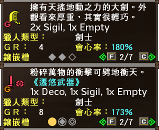

Sigils are similar to decorations but exclusively used in G Rank weaponry. They are crafted at the Cat Smith who creates random Gou weapons.
Sigil Slots are triangular slots that either replace decoration slots in standard G Rank weaponry or are part of hybrid slots that can take either decorations or a sigil. Weapons can have up to three sigils. Sigils with variable values will generally always stack but ones that add or enhance abilities and motions generally have a fixed effect regardless of the number slotted.

Although most weapons have dedicated sigils, many are far from optimal. You should carefully consider the frequency with which you will actually be using the attack. For an excellent example, the Dual Swords sigils for the Rush Slash and Frontflip Slash have incredibly low viability for Extreme Style because of Extreme Demon Mode not having access to them and because of optimal play involving almost exclusive use of that mode.
Similarly, the GS Guard Slash is outright unavailable for Extreme Style and Upswings will mostly be charged - which does not benefit from the sigil - and so the sigils to buff those moves are mostly useless, especially compared to simply buffing raw.
Realistically, if you want the best results you should really just be aiming almost entirely to get Attack or Elemental on sigils and one or more of your weapon's specific sigils. For Gunlance you should always aim to have Lv9 shelling if you are utilising Shelling and Wyvern Fires.
| Skill Tree | Skill Name | Pts | Effect |
|---|---|---|---|
| EN: Sleeping CN: 瞌睡 |
Sleeping 瞌睡 |
- | Recover health by using the gesture「睡覺」 ※ Does not stack |
| Skill Tree | Skill Name | Pts | Effect |
|---|---|---|---|
| EN: Attack Adjustment CN: 攻擊力補正 |
Attack Adjustment 攻擊力補正 |
-10 / +15 | Adjusts the true raw of a weapon by the stated amount. |
| EN: Attribute Adjustment CN: 屬性值 |
Attribute Value 屬性值 |
-10 / +15 | Adjusts the true elemental of a weapon by the stated amount for +10 Displayed element per point. |
| EN: Affinity CN: 會心率 |
Affinity 會心率 |
-10 / +15 | Adjusts the affinity percentage of a weapon by the amount stated. |
| EN: Flying Wyvern Slayer CN: 飛龍種特效 |
Flying Wyvern Slayer 飛龍種特效 |
-10 / +15 | Adjusts true raw by the value stated while in an area containing the specific defined species. |
| EN: Bird Wyvern Slayer CN: 鳥龍種特效 |
Bird Wyvern Slayer 鳥龍種特效 |
-10 / +15 | Adjusts true raw by the value stated while in an area containing the specific defined species. |
| EN: Carapaceon Slayer CN: 甲殻種特效 |
Carapaceon Slayer 甲殻種特效 |
-10 / +15 | Adjusts true raw by the value stated while in an area containing the specific defined species. |
| EN: Piscine Slayer CN: 魚龍種特效 |
Piscine Slayer 魚龍種特效 |
-10 / +15 | Adjusts true raw by the value stated while in an area containing the specific defined species. |
| EN: Fanged Beast Slayer CN: 牙獣種特效 |
Fanged Beast Slayer 牙獣種特效 |
-10 / +15 | Adjusts true raw by the value stated while in an area containing the specific defined species. |
| EN: Brute Wyvern Slayer CN: 獣龍種特效 |
Brute Wyvern Slayer 獣龍種特效 |
-10 / +15 | Adjusts true raw by the value stated while in an area containing the specific defined species. |
| EN: Leviathan Slayer CN: 海龍種特效 |
Leviathan Slayer 海龍種特效 |
-10 / +15 | Adjusts true raw by the value stated while in an area containing the specific defined species. |
| EN: Fanged Wyvern Slayer CN: 牙龍種特效 |
Fanged Wyvern Slayer 牙龍種特效 |
-10 / +15 | Adjusts true raw by the value stated while in an area containing the specific defined species. |
| EN: Elder Dragon Slayer CN: 古龍種特效 |
Elder Dragon Slayer 古龍種特效 |
-10 / +15 | Adjusts true raw by the value stated while in an area containing the specific defined species. |
| EN: Minion Slayer CN: 小型特效 |
Minion Slayer 小型特效 |
-10 / +15 | Adjusts true raw by the value stated while in an area containing small minion monsters. |
| EN: Hot CN: 猛暑 |
Heat Wave 猛暑 |
-10 / +15 | Adjusts true raw by the value stated while in a hot area that would require a Cold Pot (Desert, Volcano). |
| EN: Cold CN: 嚴寒 |
Intense Cold 嚴寒 |
-10 / +15 | Adjusts true raw by the value stated while in a cold area that would require a Hot Pot (Snowy Mountain, Swamp Caves). |
| EN: Morning Slayer CN: 早晨特效 |
Morning Slayer 早晨特效 |
-10 / +15 | Adjusts true raw by the value stated while it is morning Taiwan Time. |
| EN: Night Slayer CN: 深夜特效 |
Night Slayer 深夜特效 |
-10 / +15 | Adjusts true raw by the value stated while it is night Taiwan Time. |
| EN: Breeding Season Slayer CN: 繁殖期特效 |
Breeding Season Slayer 深夜特效 |
-10 / +15 | Adjusts true raw by the value stated when in quests taking place in the Breeding Season (Green). |
| EN: Warm Season Slayer CN: 溫暖期特效 |
Warm Season Slayer 深夜特效 |
-10 / +15 | Adjusts true raw by the value stated when in quests taking place in the Warm Season (Orange). |
| EN: Cold Season Slayer CN: 寒冷期特效 |
Cold Season Slayer 深夜特效 |
-10 / +15 | Adjusts true raw by the value stated when in quests taking place in the Cold Season (Blue). |
| EN: Monday Slayer CN: 週一特效 |
Monday Slayer 週一特效 |
-10 / +15 | Adjusts true raw by the value stated when it is Monday Taiwanese Time. |
| EN: Tuesday Slayer CN: 週二特效 |
Tuesday Slayer 週二特效 |
-10 / +15 | Adjusts true raw by the value stated when it is Monday Taiwanese Time. |
| EN: Wednesday Slayer CN: 週三特效 |
Wednesday Slayer 週三特效 |
-10 / +15 | Adjusts true raw by the value stated when it is Monday Taiwanese Time. |
| EN: Thursday Slayer CN: 週四特效 |
Thursday Slayer 週四特效 |
-10 / +15 | Adjusts true raw by the value stated when it is Monday Taiwanese Time. |
| EN: Friday Slayer CN: 週五特效 |
Friday Slayer 週五特效 |
-10 / +15 | Adjusts true raw by the value stated when it is Monday Taiwanese Time. |
| EN: Saturday Slayer CN: 週六特效 |
Saturday Slayer 週六特效 |
-10 / +15 | Adjusts true raw by the value stated when it is Monday Taiwanese Time. |
| EN: Sunday Slayer CN: 週日特效 |
Sunday Slayer 週日特效 |
-10 / +15 | Adjusts true raw by the value stated when it is Monday Taiwanese Time. |
| EN: Unity CN: 團結 |
Unity 團結 |
- | Adjusts true raw by +5 if all hunters in quest are nearby. ※ Does not stack |
| EN: Strengthen Bow Raw CN: 無屬弓強化 |
Strengthen Bow Raw 無屬弓強化 |
- | Adds additional raw damage based on attack strength. Formula: Attack x 0.015 x Charge Modifier x Hitbox Lv1: 0.04x Lv2: 1.0x Lv3: 1.5x Lv4: 1.85x Snipe Lv4: 1.0x Snipe Lv4: 1.1x Rising: 2.0x Is not affected by affinity, coatings or critical distance. ※ Does not stack, does not work with Bows with Elemental |
| EN: Strengthen SnS Raw CN: 無屬單手強化 |
Strengthen SnS Raw 無屬單手強化 |
- | Adds additional raw damage based on attack strength. Formula is: Attack x 0.025 x Sharp Multiplier x Hitbox Blue: 1.0625x White: 1.125x Purple: 1.15x Cyan: 1.20x Ignores motion values, Additional 0.2x the extra damage is added by Fencing+2 ※ Does not stack, does not work with SnS with Elemental or Status |
Only one Up roll can be active at any time. E.g. +14 DS Up and a +12 DS Up sigils would only be +14, not +26.
| Skill Tree | Skill Name | Pts | Effect |
|---|---|---|---|
| EN: Sword and Shield Up CN: - |
Sword and Shield Up - |
+1 / +15 | Increases Attack, Affinity and Elemental Values of appropriate weapon class. |
| EN: Dual Swords Up CN: - |
Dual Swords Up - |
+1 / +15 | Increases Attack, Affinity and Elemental Values of appropriate weapon class. |
| EN: Great Sword Up CN: - |
Great Sword Up - |
+1 / +15 | Increases Attack, Affinity and Elemental Values of appropriate weapon class. |
| EN: Long Sword Up CN: - |
Long Sword Up - |
+1 / +15 | Increases Attack, Affinity and Elemental Values of appropriate weapon class. |
| EN: Hammer Up CN: - |
Hammer Up - |
+1 / +15 | Increases Attack, Affinity and Elemental Values of appropriate weapon class. |
| EN: Hunting Horn Up CN: - |
Hunting Horn Up - |
+1 / +15 | Increases Attack, Affinity and Elemental Values of appropriate weapon class. |
| EN: Lance Up CN: - |
Lance Up - |
+1 / +15 | Increases Attack, Affinity and Elemental Values of appropriate weapon class. |
| EN: Gunlance Up CN: - |
Gunlance Up - |
+1 / +15 | Increases Attack, Affinity and Elemental Values of appropriate weapon class. |
| EN: Tonfa Up CN: - |
Tonfa Up - |
+1 / +15 | Increases Attack, Affinity and Elemental Values of appropriate weapon class. |
| EN: Switch Axe Up CN: - |
Switch Axe Up - |
+1 / +15 | Increases Attack, Affinity and Elemental Values of appropriate weapon class. |
| EN: Magnet Spike Up CN: - |
Magnet Spike Up - |
+1 / +15 | Increases Attack, Affinity and Elemental Values of appropriate weapon class. |
| EN: Light Bowgun Up CN: - |
Light Bowgun Up - |
+1 / +15 | Increases Attack, Affinity and Elemental Values of appropriate weapon class. |
| EN: Heavy Bowgun Up CN: - |
Heavy Bowgun Up - |
+1 / +15 | Increases Attack, Affinity and Elemental Values of appropriate weapon class. |
| EN: Bow Up CN: - |
Bow Up - |
+1 / +15 | Increases Attack, Affinity and Elemental Values of appropriate weapon class. |
| Skill Tree | Skill Name | Pts | Effect |
|---|---|---|---|
| EN: Defense CN: 防禦力 |
Defense 防禦力 |
-10 / +20 | Alters defense by the stated value. |
| EN: Helper CN: 援護 |
Helper 援護 |
- | Hunter's that are not G Rank gain +50 defense in quests with a user of this sigil. ※ Does not stack |
| Skill Tree | Skill Name | Pts | Effect |
|---|---|---|---|
| EN: Tech Boost (SnS) CN: 技強化[單手] |
(SnS) Slide Attack [單手]滑斬 |
- | Boosts the Motion Value of the Sliding Attack (21 > 31). |
| (SnS) Shield Attacks [單手]盾攻擊 |
- | Boosts the Motion Value of the Shield Attack (13 > 19) and Shield Bash (18 > 27). Has no effect on Extreme Style's Continuous Bashing Combo | |
| (SnS) Infinite Slash [單手]- |
- | Boosts the Motion Value of all three motions of the Infinite Slash (25 > 28). | |
| EN: Tech Change (SnS) CN: 技變化[單手] |
(SnS) Vacuum Slash [單手]真空迴旋斬 |
- | Changes the property of the Horizontal Slash and adds a ranged Red Shockwave to it. Motion value is 31･16 with the second portion not being affected by Fencing+2. ※ Earth and Extreme Styles |
| EN: Tech Boost (DS) CN: 技強化[雙劍] |
(DS) Frontflip Slash [雙劍]縱迴旋斬 |
- | Boosts the Motion Value of the Frontflip Slash Attack (11･15 > 16･22). ※ Storm Style Only |
| (DS) Rush Slash [雙劍]橫斬 |
- | Boosts the Motion Value of the Dash Attack (11･5 > 16･7 and 14･6 > 21･9 in Demon Mode). ※ Earth and Heaven Style Only |
|
| (DS) Sharpening Technique [雙劍]刀刃互擊術 |
- | Causes the first sharpen in a combo to count as two sharpens for the sake of multiplier building (Maximum 4 sharpens for a 1.20x attack multiplier). | |
| EN: Tech Boost (GS) CN: 技強化[大劍] |
(GS) Upswing [大劍]上撈斬 |
- | Boosts the Motion Value of the Upswing Attack (56 > 72). ※ Does not affect Upswing Charges |
| (GS) Rotation Slash [大劍]橫掃斬 |
- | Boosts the Motion Value of the Horizontal Slash Attack (44 > 57). | |
| (GS) Guard Slash [大劍]防禦斬り |
- | Allows the Guard Slash to block an additional hit, increasing the actual counter's damage. ※ Heaven and Storm Style Only. Maximum of two additional blocked attacks for a total of three (meaning up to 2 sigils are useful) |
|
| EN: Tech Boost (LS) CN: 技強化[太刀] |
(LS) Piercing Stab [太刀]穿刺 |
- | Boosts the Motion Value of the Piercing Stab Attack (24･12x2 > 32･16x2) and the Super Piecing Stab (24･12x5･30 > 32･16x5･40). Only affects the manually charged version, not the parry follow up. ※ Storm and Extreme Style Only |
| (LS) Upswing [太刀]上撈斬 |
- | Boosts the Motion Value of the Upswing (28 > 42). | |
| (LS) Retreating Sword [太刀]後退斬 |
- | Adds iframes to the Fade Slash and Backhop Slash similar to those found on the Evade Slash in Heaven and Storm styles. ※ Earth Style Only | |
| (LS) Blink - |
- | Increases the distance that the Blink teleport moves you. Does not stack. ※ Extreme Style Only | |
| EN: Tech Boost (Lance) CN: 技強化[太刀] |
(Lance) Shield Attack [槍]盾攻擊 |
- | Boosts the Motion Value of the Shield Rush (3･25 > 4･37). ※ Storm and Extreme Styles |
| (Lance) Charge Finisher [槍]突進止擊 |
- | Boosts the Motion Value of the Charge Finisher Attack (50 > 75). ※ Earth Style Only |
|
| EN: Tech Change (Lance) CN: 技變化[槍] |
(Lance) Drill Charge [槍]鑽頭突進 |
- | Changes the Charge into a Drill Charge attack (25 x Hits > ((31･16) x Hits). ※ Earth Style Only |
| EN: Tech Boost (Gunlance) CN: 技強化[銃槍] |
(GL) Rush Thrust [銃槍]踏步上斬 |
- | Boosts the Motion Value of the Rush Thrust (38 > 57) this is the primary unsheathe and done from moving and pressing the normal thrust while unsheathed. |
| (GL) Horizontal Slash [銃槍]踏込薙払い |
- | Boosts the Motion Value of the Horizontal Slash Attack (34 > 51). Does not affect the Bombardment Boost follow up. | |
| EN: Tech Boost (Hammer) CN: 技強化[錘] |
(Hammer) Baseball Swing [錘]側揮擊 |
- | Boosts the Motion Value of the Baseball Swing (100 > 130). |
| (Hammer) Unsheathe Upswing [錘]振り上げ |
- | Boosts the Motion Value of the Unsheathe Upswing (32 > 48). | |
| (Hammer) Charging Movement Speed [錘]蓄力移動術 |
- | Boosts movement speed while holding a charge attack. ※ Stacks for further increased speed, only affects non-running charges |
|
| EN: Tech Boost (HH) CN: 技強化[笛] |
(HH) Musical Attacks [笛]演奏攻擊 |
- | Boosts the Motion Value of all attacks related to playing song notes. Start Playing (26 > 39), Note 1 (50 > 75), Note 2 (43 > 64), Note 3 (49 > 73), Stop Playing (31 > 46) |
| (HH) Beatdown [笛]戳擊 |
- | Boosts the Motion Value of the Jab Attack (16 > 27). | |
| EN: Tech Boost (Switch Axe) CN: 技強化[劍斧] |
(Switch Axe) Stunning Blast [劍斧]爆發暈眩 |
- | Boosts the stun values on the Elemental Discharge and Absorption Release. ※ Early Ele. Discharge 20 > 40, Ele. Discharge 50 > 80, Early Abs. Release 40 > 50, Abs. Release 150 > 220 |
| (Switch Axe) Guard [劍斧]防禦 |
- | Widens the guarding window by a few degrees and causes you to regain 15 health while guarding. ※ Doesn't stack, doesn't increase guarding frames. |
|
| (Switch Axe) Charge Movement Speed [劍斧]蓄力移動術 |
- | Increases movement speed while charging. | |
| EN: Tech Boost (Tonfas) CN: - |
(Tonfas) EX Meter [棍]ＥＸ計量表 |
- | Increases the rate at which the EX Gauge fills. Does not stack. ※ All Styles with EX gauge. |
| (Tonfas) Combo Timer [棍]Ｃ倒數時間 |
- | Slows the rate at which a combo (red bars) is dropped while using Tonfa. Does not stack. ※ All Styles with Combo Gauge. |
|
| EN: Draw Strength (LS) CN: 拔刀強化[太刀] |
(LS) Draw Strength [太刀]拔刀攻擊 |
- | Increases the motion value of all unsheathe attacks with a Lance by a 1.50x multiplier. |
| EN: Draw Strength (Lance) CN: 拔刀強化[槍] |
(Lance) Draw Strength [槍]拔刀突刺 |
- | Increases the motion value of all unsheathe attacks with a Lance by a 1.50x multiplier. |
| EN: Length Up CN: 長度UP |
(SnS) Radiant Blue Sword [單手]蒼輝劍 |
- | Increases the length of a weapon by one level at the cost of 35 Attack (25 True Raw). ※ Multiple sigils will increase the length by additional levels. Raw reduction is fixed at 25 True Raw, three would still lose 25, not 75. |
| (Great Sword) Radiant Blue Great Sword [大劍]蒼輝大劍 |
- | Increases the length of a weapon by one level at the cost of 120 Attack (25 True Raw). ※ Multiple sigils will increase the length by additional levels. Raw reduction is fixed at 25 True Raw, three would still lose 25, not 75. | |
| (Long Sword) Radiant Blue Long Sword [太刀]蒼輝刀 |
- | Increases the length of a weapon by one level at the cost of 120 Attack (25 True Raw). ※ Multiple sigils will increase the length by additional levels. Raw reduction is fixed at 25 True Raw, three would still lose 25, not 75. | |
| (Lance) Radiant Blue Lance [槍]蒼輝槍 |
- | Increases the length of a weapon by one level at the cost of 58 Attack (25 True Raw). ※ Multiple sigils will increase the length by additional levels. Raw reduction is fixed at 25 True Raw, three would still lose 25, not 75. | |
| (Dual Swords) Radiant Blue Dual Swords [雙劍]蒼輝雙劍 |
- | Increases the length of a weapon by one level at the cost of 35 Attack (25 True Raw). ※ Multiple sigils will increase the length by additional levels. Raw reduction is fixed at 25 True Raw, three would still lose 25, not 75. | |
| (Hammer) Radiant Blue Hammer [錘]蒼輝錘 |
- | Increases the length of a weapon by one level at the cost of 130 Attack (25 True Raw). ※ Multiple sigils will increase the length by additional levels. Raw reduction is fixed at 25 True Raw, three would still lose 25, not 75. | |
| EN: Note Change 1 CN: 旋律變化１ |
Note 1 Change 旋律１ |
- | Changes the 1st Note's colour to the stated colour [青 Blue] [黃 Yellow] [綠 Green] [赤 Red] [空 Cyan] |
| EN: Note Change 2 CN: 旋律變化２ |
Note 2 Change 旋律２ |
- | Changes the 2nd Note's colour to the stated colour [紫 Purple] [青 Blue] [黃 Yellow] [綠 Green] [赤 Red] [空 Cyan] |
| EN: Note Change 3 CN: 旋律變化３ |
Note 3 Change 旋律３ |
- | Changes the 3rd Note's colour to the stated colour [紫 Purple] [青 Blue] [黃 Yellow] [綠 Green] [赤 Red] [空 Cyan] |
| EN: Shelling Change CN: 砲擊變化 |
Shell Change 砲擊 |
- | Changes a Gunlance's shelling type to the that defined on the sigil [通常型 Normal] [擴散型 Spread] [放射型 Long] |
| EN: Shelling Change CN:砲擊強化 |
Shelling Level Up 砲擊強化 |
- | Upgrades shelling on a Gunlance by 1 level. ※ Stacks for more levels, Lv9 shelling is maximum. |
| Skill Tree | Skill Name | Pts | Effect |
|---|---|---|---|
| EN: Rapid Fire Add CN: 速射追加 |
Rapid Fire Normal S Lv1 速射 通常彈LV1 |
- | Adds the ability to shoot the relevant ammo with Rapid Fire. (LBG Only) |
| Rapid Fire Normal S Lv2 速射 通常彈LV2 |
- | Adds the ability to shoot the relevant ammo with Rapid Fire. (LBG Only) | |
| Rapid Fire Pierce S Lv1 速射 貫通LV1 |
- | Adds the ability to shoot the relevant ammo with Rapid Fire. (LBG Only) | |
| Rapid Fire Pellet S Lv1 速射 散彈LV1 |
- | Adds the ability to shoot the relevant ammo with Rapid Fire. (LBG Only) | |
| Rapid Fire Crag S Lv1 速射 徹甲榴彈LV1 |
- | Adds the ability to shoot the relevant ammo with Rapid Fire. (LBG Only) | |
| Rapid Fire Flame S 速射 火炎彈 |
- | Adds the ability to shoot the relevant ammo with Rapid Fire. (LBG Only) | |
| Rapid Fire Water S 速射 水冷彈 |
- | Adds the ability to shoot the relevant ammo with Rapid Fire. (LBG Only) | |
| Rapid Fire Thunder S 速射 電擊彈 |
- | Adds the ability to shoot the relevant ammo with Rapid Fire. (LBG Only) | |
| Rapid Fire Ice S 速射 冰結彈 |
- | Adds the ability to shoot the relevant ammo with Rapid Fire. (LBG Only) | |
| EN: Super Rapid Fire Add CN: 超速射追加 |
Super Rapid Fire Normal S Lv2 超速射 通常彈LV2 |
- | Adds the ability to shoot the relevant ammo with Super Rapid Fire. (LBG Only) |
| Super Rapid Fire Pierce S Lv1 超速射 貫通彈LV1 |
- | Adds the ability to shoot the relevant ammo with Super Rapid Fire. (LBG Only) | |
| Super Rapid Fire Pellet S Lv1 超速射 散彈LV1 |
- | Adds the ability to shoot the relevant ammo with Super Rapid Fire. (LBG Only) | |
| Super Rapid Fire Flame S 超速射 火炎彈 |
- | Adds the ability to shoot the relevant ammo with Super Rapid Fire. (LBG Only) | |
| Super Rapid Fire Water S 超速射 水冷彈 |
- | Adds the ability to shoot the relevant ammo with Super Rapid Fire. (LBG Only) | |
| EN: Rapid Fire Immunity CN: 速射追加 |
Remove Rapid Fire Normal S Lv1 非速射 通常彈LV1 |
- | Adds the ability to shoot the relevant ammo with Rapid Fire. (LBG Only) |
| Remove Rapid Fire Normal S Lv2 非速射 通常彈LV2 |
- | Adds the ability to shoot the relevant ammo with Rapid Fire. (LBG Only) | |
| Remove Rapid Fire Pierce S Lv1 非速射 貫通LV1 |
- | Adds the ability to shoot the relevant ammo with Rapid Fire. (LBG Only) | |
| Remove Rapid Fire Pellet S Lv1 非速射 散彈LV1 |
- | Adds the ability to shoot the relevant ammo with Rapid Fire. (LBG Only) | |
| Remove Rapid Fire Crag S Lv1 非速射 徹甲榴彈LV1 |
- | Adds the ability to shoot the relevant ammo with Rapid Fire. (LBG Only) | |
| Remove Rapid Fire Flame S 非速射 火炎彈 |
- | Adds the ability to shoot the relevant ammo with Rapid Fire. (LBG Only) | |
| Remove Rapid Fire Water S 非速射 水冷彈 |
- | Adds the ability to shoot the relevant ammo with Rapid Fire. (LBG Only) | |
| Remove Rapid Fire Thunder S 非速射 電擊彈 |
- | Adds the ability to shoot the relevant ammo with Rapid Fire. (LBG Only) | |
| Remove Rapid Fire Ice S 非速射 冰結彈 |
- | Adds the ability to shoot the relevant ammo with Rapid Fire. (LBG Only) | |
| EN: Heat Cannon Add CN: 排熱噴射追加 |
Heat Cannon Add 排熱噴射追加 |
- | Adds a Heat Cannon to a Heavy Bowgun. (HBG Only) ※ Does not take up the slot and can be added while using a shield etc. Adds it on top of the Extreme Style's actual beam for two beams. |
| EN: Tech Change (Bow) CN:技變化[弓] |
(Bow) Piercing Shot [弓]貫薙弓 |
- | Changes the crouching final charge level Snipe Shot into a Piercing Shot that hits multiple times. ※ Storm Style only. |
| EN: Tech Boost (Bow) CN: 技強化[弓] |
(Bow) Rising Dragon Bow | - | Boosts the Motion Value of the Shoryuken attack with the Bow (12x2･10x2･31･10 > 17x2･15x2･41･15). ※ Storm and Heaven Style only. |
| EN: Tech Change (LBG) CN: 技強化[輕弩] |
(LBG) J Gauge [輕銃]J計量表 |
- | Increases the width of the 'Just' sweetspot for quick reloads and shots. |
| EN: Arc Shot Change CN: 曲射變化 |
Arc Shot Change 曲射 |
- | Changes the Arc Shot into the defined type. [放散型 Wide Pellet Rain] [集中型 Narrow Pellet Rain] [爆裂型 Explosive Shell] [切斷型 Cutting Rain] |
| EN: Shot Change CN: 彈變化 |
(Cluster Shot) Explosion [擴散彈]大爆發 |
- | Cluster Shots have a low chance to detonate into a giant explosion. |
| (Pellet Shot) Blunt Bullets [散彈]打擊彈 |
- | Changes the property of Pellet Shots to be Impact and to deal KO damage. |
| Skill Tree | Skill Name | Pts | Effect |
|---|---|---|---|
| EN: Status Attack CN: 狀態異常值 |
Status Attack 狀態異常值 |
- | Increases Status value on weapons by 1.1x ※ Does not stack with more sigils. Does stack with Pugi, Status Attack Up and Status Phials. |
| EN: Stun Value CN: 暈眩值 |
Stun value 暈眩值 |
- | Increases KO inflicted by 1.1x ※ Only one sigil applies, does not stack with multiple sigils. ※ Stacks with Caravan Skill (1.1x) and Active Feature (1.5x) for a maximum of 1.815x. |
| Skill Tree | Skill Name | Pts | Effect |
|---|---|---|---|
| EN: Omnivore CN: 雜食 |
Omnivore 雜食 |
- | Chance to heal by using any consumable. ※ Does not stack. |
| EN: Ballista Saver CN: 弩彈節約 |
Ballista Saver 弩彈節約 |
- | Chance to not consume Ballista ammo on firing. ※ Does not stack. |
| Skill Tree | Skill Name | Pts | Effect |
|---|---|---|---|
| EN: Balloon's Friend CN: 熱氣球之友 |
Balloon's Friend 熱氣球之友 |
- | Allows unlimited waving at the Balloon to locate monster. ※ Does not stack, does not force balloon spawns. |
| EN: Decoy CN: 誘餌 |
Decoy 誘餌 |
- | Use the Clap [拍手] gesture to attract a monster's attention to yourself. ※ Does not stack. |
| Skill Tree | Skill Name | Pts | Effect |
|---|---|---|---|
| EN: Dowsing CN: 探測術 |
Dowsing 探測術 |
+1 / +15 | Apparently increases the rate of Rare and G Rank items from a gathering spot's item pool. ※ Unclear how it works mechanically, possibly similar to Caravan carving skill which rerolls if you get a carve above 51% and removes that item from the carving pool. |
| EN: Carving Division CN: 解體師 |
Carving Division 解體師 |
- | Always carve Raw Meat in 2 stacks ※ Does not stack. |
| Skill Tree | Skill Name | Pts | Effect |
|---|---|---|---|
| EN: Hunter Soul CN: 獵人魂 |
Hunter Soul 獵人魂 |
- | Increases Colour PP by +1 to the appropriate types on all eligible quests. ※ Does not stack. |
| EN: Soul Collection CN: 入魂建議 |
Soul Collection 入魂建議 |
- | Increases Souls from quests during festival by +1 ※ Does not stack. |
| EN: Money Expert CN: 報酬高手 |
Money Expert 報酬高手 |
+1 / +10 | Increases money received from quest by 1.10 x Defined (Value/100) (e.g. +6 is 1.16x original Zeny or GZeny). |
| EN: Experience Expert CN: 經驗高手 |
Experience Expert 經驗高手 |
+1 / +10 | Increases Ranking Points received from quest by 1.01 x Defined Value ※ Additive 1.10x, 1.20x and 1.30x on three separate sigils would be 1.50x, not 1.71x ※ Does not Affect GSRP, only GRP |
| Skill Tree | Skill Name | Pts | Effect |
|---|---|---|---|
| EN: Manager's Friend CN: 管理人之友 |
Manager's Friend 獵人魂 |
+1 / +10 | Increased chance of Farm Waifu appearing during quests. |
| EN: Gook's Friend CN: 咕咕鴨之友 |
Gook's Friend 咕咕鴨之友 |
+1 / +10 | Increases chance of Rare Gooks on Gook Quests |
| EN: Halk's Friend CN: 狩獵鷹之友 |
Halk's Friend 狩獵鷹之友 |
- | Increased chance of Halk dropping an egg at quest completion. ※ Does not stack. |
| EN: Cat Breeder CN: 貓咪育成 |
Cat Breeder 貓咪育成 |
- | Partynaa mood is more likely to increase. |
| EN: Daddy's Influence CN: 纏鬧不休 |
Daddy's Influence 纏鬧不休 |
- | Perform 「耍賴 / Spoiled Brat」 action to get a 10% discount in stores. |
| EN: Sonic Bomb Range CN: 音爆範圍擴大 |
Sonic Bomb Range 音爆範圍擴大 |
- | Increases the range of the sonic bomb effect. |
| EN: Weapon Unsheathed Movement Speed CN: 拔刀移動速度 |
Weapon Movement Speed 拔刀移動速度 |
- | Movement speed will increase after unsheathing a weapon. Speed increase is between 1.13 to 1.20x. ※ Does not stack or overlap with most similar armour skills. ※ Overlaps with Hammer Charge Speed, SnS Hiden, Hunting Horn Movement Speed Song and Dual Swords Demon Mode speed buffs. |
| EN: Rarity Change CN: 稀有度變化 |
Rarity 1~12 稀有度１～１２ |
- | Changes the rarity of a G Rank weapon to be the defined value at the cost of lowering Raw, Elemental and Status values. |
| Skill Tree | Skill Name | Pts | Effect |
|---|---|---|---|
| EN: Effect Duration CN: - |
Duration - |
- | Dictates the effect duration of the Zenith Sigil, duration is 15 seconds plus the value of the sigil. |
| EN: Recharge Duration CN: - |
Cooldown - |
+1 / +20 | Dictates the recharge duration of the Zenith Sigil, cooldown is 120 seconds minus the value of the sigil. |
| EN: [Zenith] Fire Res CN: - |
[Zenith] Fire Res - |
+4 / +20 | Increases the associated elemental resistance and removes any active blights of that element. |
| EN: [Zenith] Water Res CN: - |
[Zenith] Water Res - |
+1 / +10 | Increases the associated elemental resistance and removes any active blights of that element. |
| EN: [Zenith] Thunder Res CN: - |
[Zenith] Thunder Res - |
+1 / +10 | Increases the associated elemental resistance and removes any active blights of that element. |
| EN: [Zenith] Ice Res CN: - |
[Zenith] Ice Res - |
+1 / +10 | Increases the associated elemental resistance and removes any active blights of that element. |
| EN: [Zenith] Dragon Res CN: - |
[Zenith] Dragon Res - |
+1 / +10 | Increases the associated elemental resistance and removes any active blights of that element. |
| EN: [Zenith] Healing CN: - |
[Zenith] Healing - |
+1 / +5 | Recovers health over time while active. |
| EN: [Zenith] Heroics CN: - |
[Zenith] Heroics - |
- | Causes a single hit to deal 0 damage. Reactions to the hit such as launching still occur. |
| EN: [Zenith] Attack CN: - |
[Zenith] Attack - |
+1 / +15 | Increases raw values for its duration by 30 + 20 x Value (e.g. for +8 it would be 20 * 8 = 160 + 30 = 190 True Raw) |
| EN: [Zenith] Elemental CN: - |
[Zenith] Elemental - |
+1 / +15 | Multiplies elemental values for its duration by 1.3 + Value * 0.1 (e.g. for +8 it would be 0.1 * 8 = 0.8 + 1.3 = 2.1x elemental) |
| EN: [Zenith] Movement Speed CN: - |
[Zenith] Movement Speed - |
+1 / +5 | Increases movement speed for its duration. |
| Skill Tree | Skill Name | Pts | Effect |
|---|---|---|---|
| EN: [Ranged] Attack CN: - |
[Ranged] Attack - |
+1 / +15 | Increases Attack Values while in the radius of the dome. Dome is coloured Red. Value for each roll is 25 + (Value * 5) (e.g. for +8 it would be 8 * 50 = 400 + 50 = +450 Elemental Value) |
| EN: [Ranged] Elemental CN: - |
[Ranged] Elemental - |
+1 / +15 | Increases Elemental Values while in the radius of the dome. Dome is coloured Pink. Value for each roll is 50 + (Value * 50) (e.g. for +8 it would be 8 * 50 = 400 + 50 = +450 Elemental Value) |
| EN: [Ranged] Affinity CN: - |
[Ranged] Affinity - |
+1 / +15 | Increases Affinity Values while in the radius of the dome. Dome is coloured Blue. Value for each roll is 20 + (Value * 2) (e.g. for +8 it would be 8 * 2 = 16 + 20 = +36% Affinity) |
| EN: [Ranged] Status CN: - |
[Ranged] Status - |
- | Increases Status Values by 1.50x while in the radius of the dome. Dome is coloured Purple. ※ Does not stack |
| EN: [Ranged] Stun CN: - |
[Ranged] Stun - |
- | Increases Stun Values while in the radius of the dome. Dome is coloured Yellow. |
| EN: [Ranged] Healing CN: - |
[Ranged] Healing - |
- | Recovers Health while in the radius of the dome. Dome is coloured Green. |
| EN: [Ranged] All Res CN: - |
[Ranged] All Res - |
+1 / +15 | Increases All Resistances while in the radius of the dome. Dome is coloured Black. Res is increased by roll x 2 |